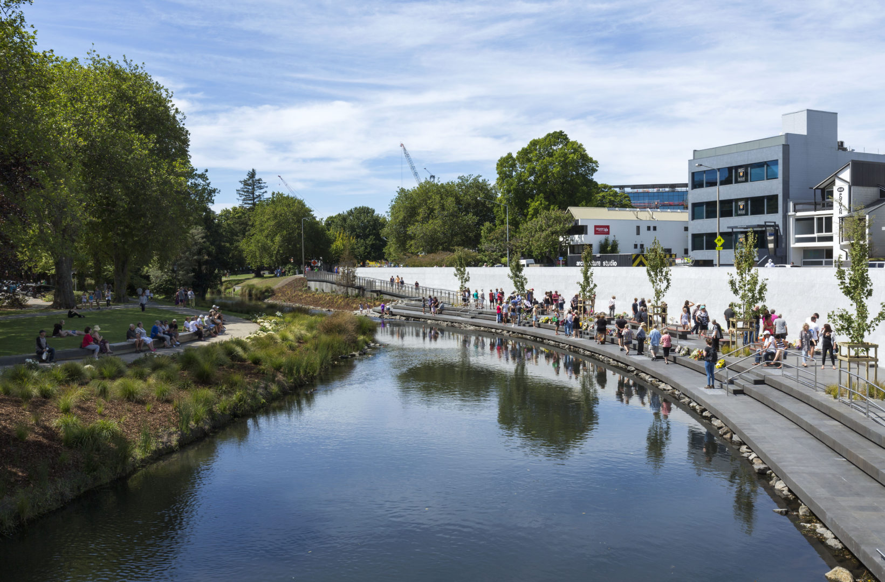
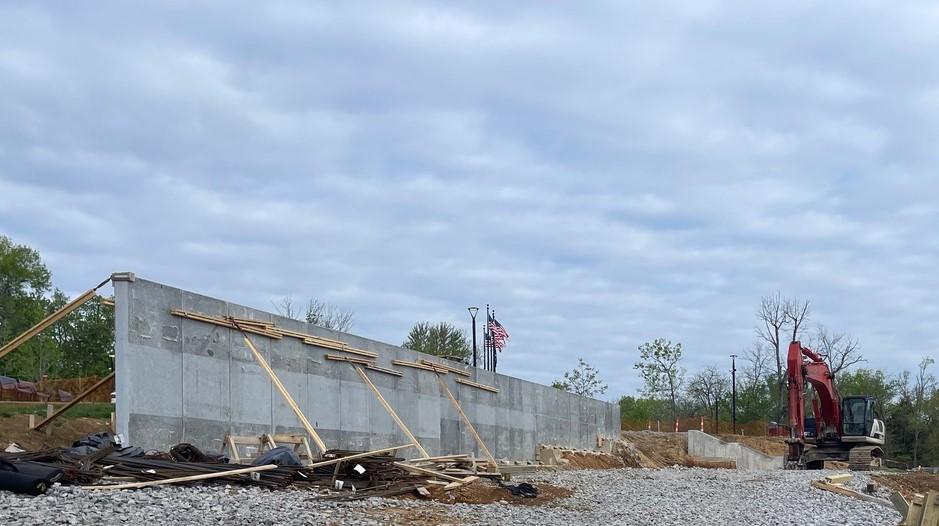
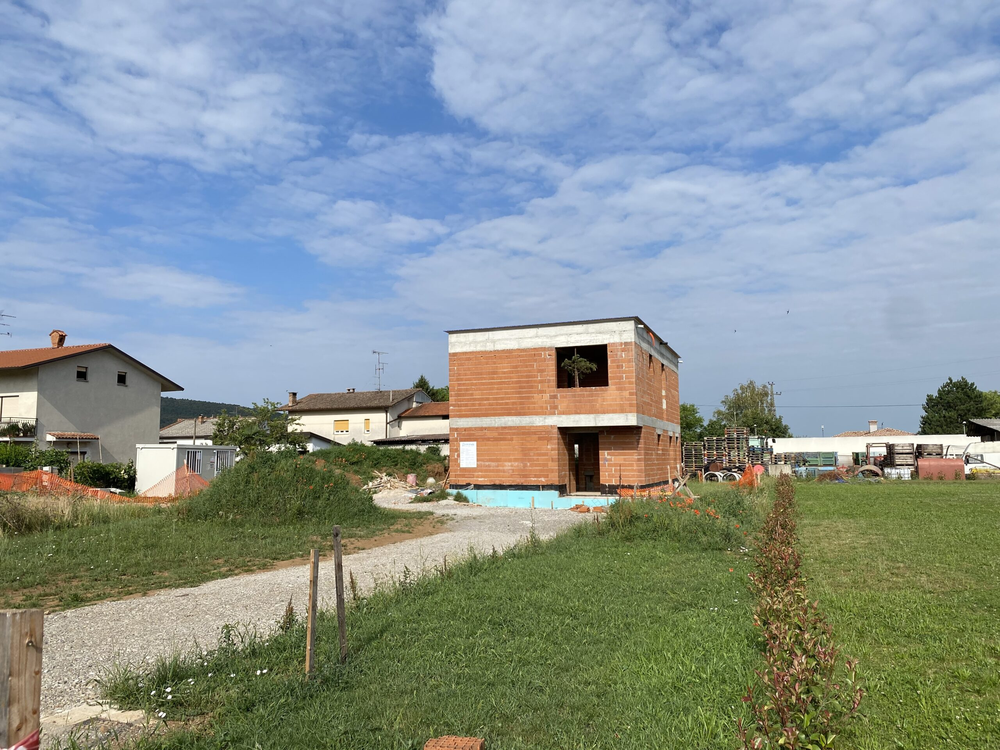
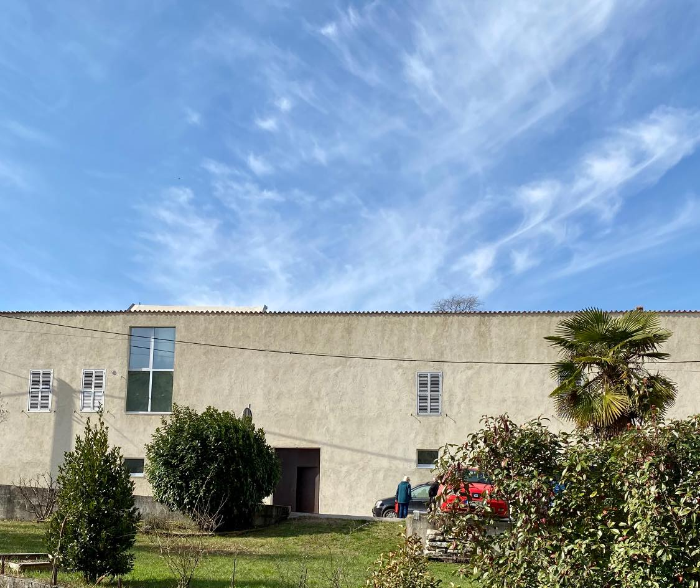
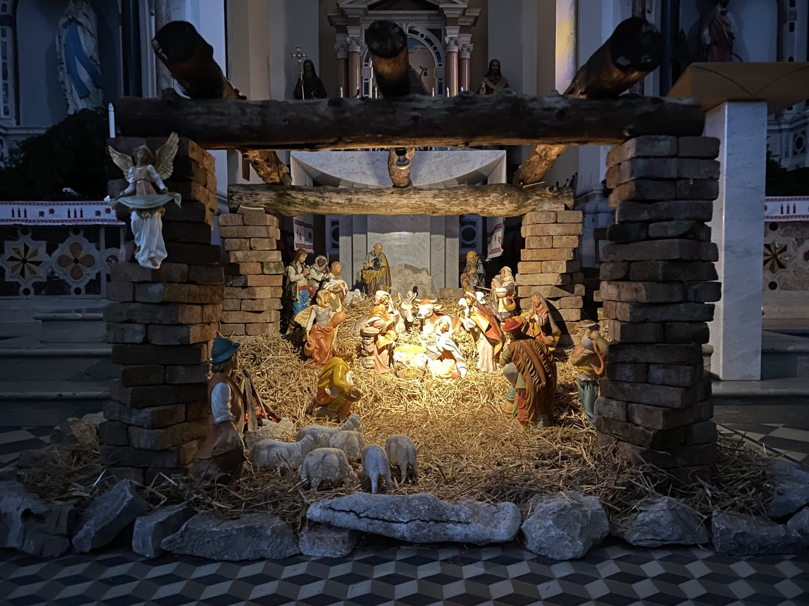

Oct 15, 2023
Tri Ân Monument Dedication
Several hundred people attended the Tri Ân Monument dedication ceremony at the Veterans Memorial Park.

Architecture of Silence and Permanence

Memorial • Christchurch, NZ • 2017
A place of past and future, providing a connection to the water symbolic of life and its infinite nature.
View ProjectMemorial • Kentucky, USA • 2023
A tribute honoring those who fought for freedom, represented by eight bamboo-formed concrete columns standing majestically at the edge of the forest.
View ProjectCompetition • San Jose, USA • 2020
An iconic landmark proposal reflecting the innovative spirit of Silicon Valley.
View ProjectSacral • Ankaran, Slovenia • 2026
A modern addition to a modernist church, defining a new vertical presence in the Mediterranean landscape.
View ProjectResidential • Slovenia • 2023
A dialogue between traditional masonry and contemporary glass and wood, integrated into the rural landscape.
View ProjectMemorial • Los Angeles, USA • 2022
A space for reflection and remembrance performance, honoring the history and resilience of the Chinese community.
View ProjectResidential • Slovenia • 2022
A family home in the Mediterranean village of Ustje, designed to harmonize with the local vernacular and climate.
View ProjectResidential • Slovenia • 2020
Built upon the foundations of an existing structure, House 41 navigates a narrow plot to create a sequence of light-filled spaces.
View ProjectSocial Housing • Slovenia • 2019
A charity-led initiative to provide social housing that maintains a high standard of architectural clarity and human dignity.
View ProjectMemorial • Belgium • 2018
A proposal for the European Parliament to honor the victims of totalitarianism through a space of collective silence.
View ProjectResidential • Slovenia • 2017
A contemporary family home in the Prekmurje region, where volume and void play with regional traditions.
View ProjectResidential • Slovenia • 2016
Set on vineyard terraces, the house offers quietude and panoramic views, focused on simple materiality and light.
View ProjectSeveral hundred people attended the Tri Ân Monument dedication ceremony at the Veterans Memorial Park.

Construction of the Tri Ân Monument is underway in Jeffersontown, Kentucky.

Structure of the Budin House is complete and waits for finishing works.
The city of Jeffersontown broke ground on a new monument honoring Vietnam War veterans.

The construction of House 41 in Velike Zablje, Slovenia, is now complete.

Let's discuss how we can bring clarity and timelessness to your next architectural project.
Start a Conversation